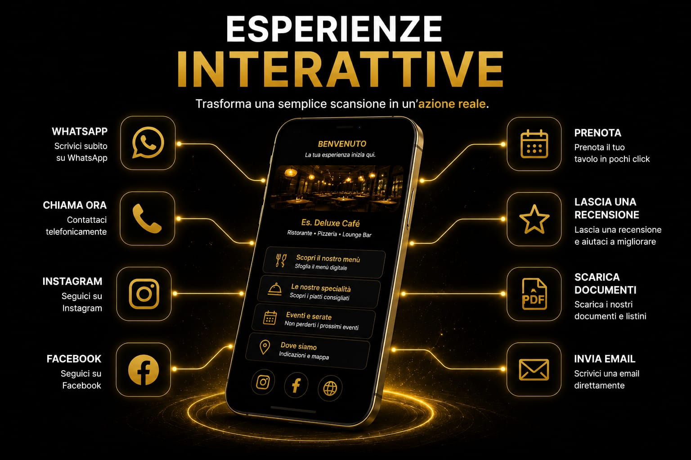
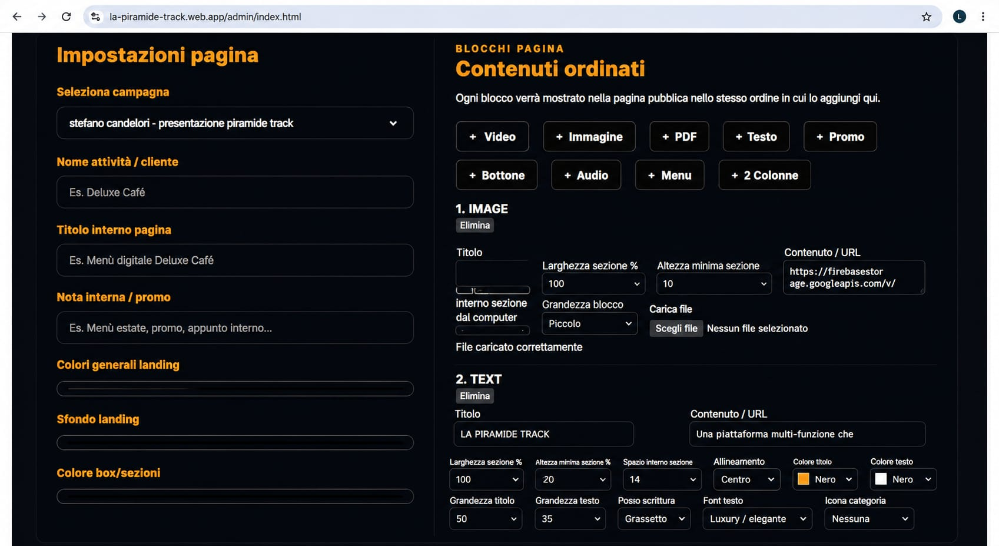
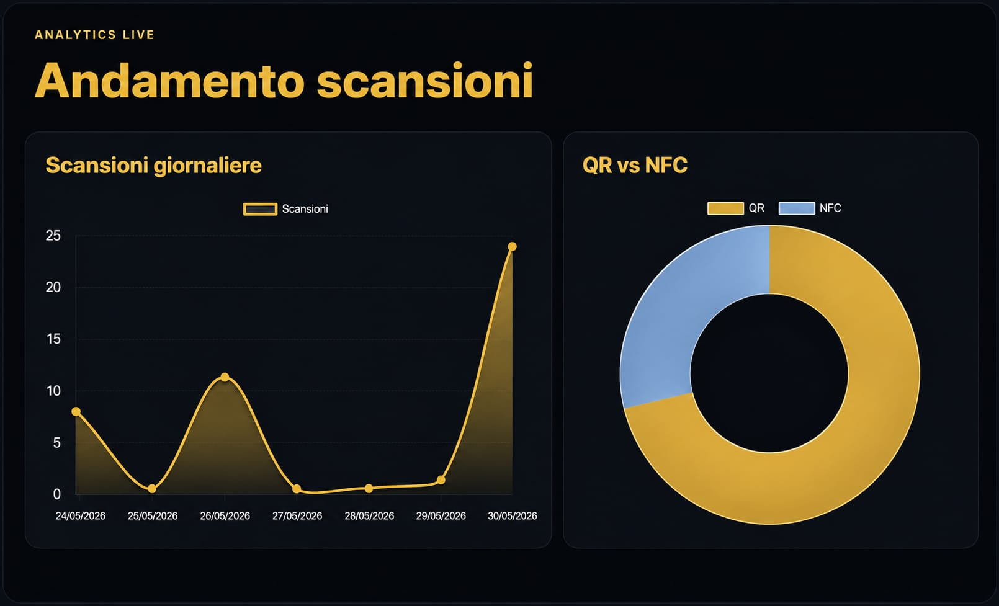
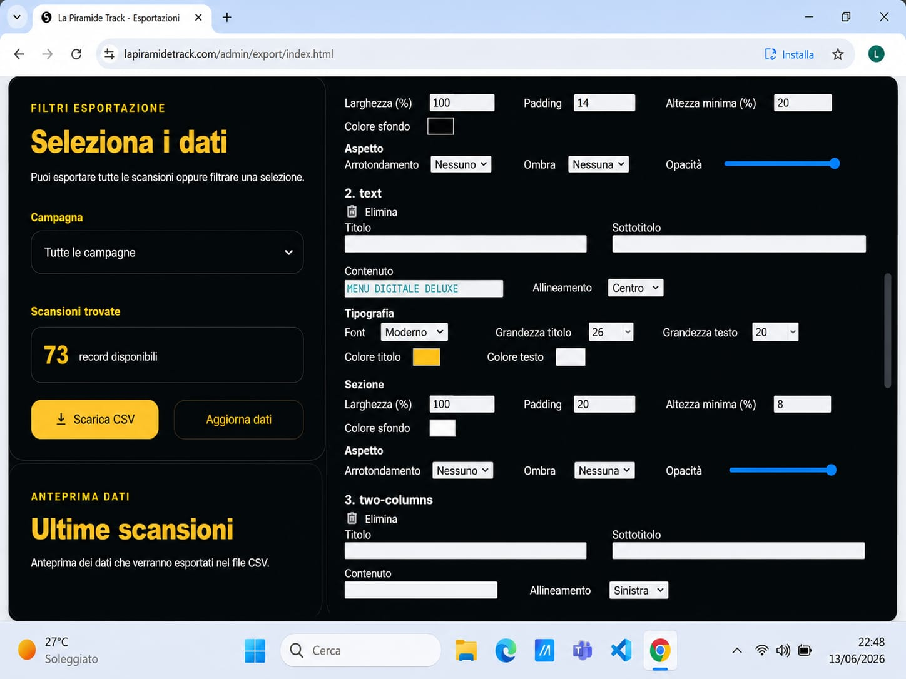
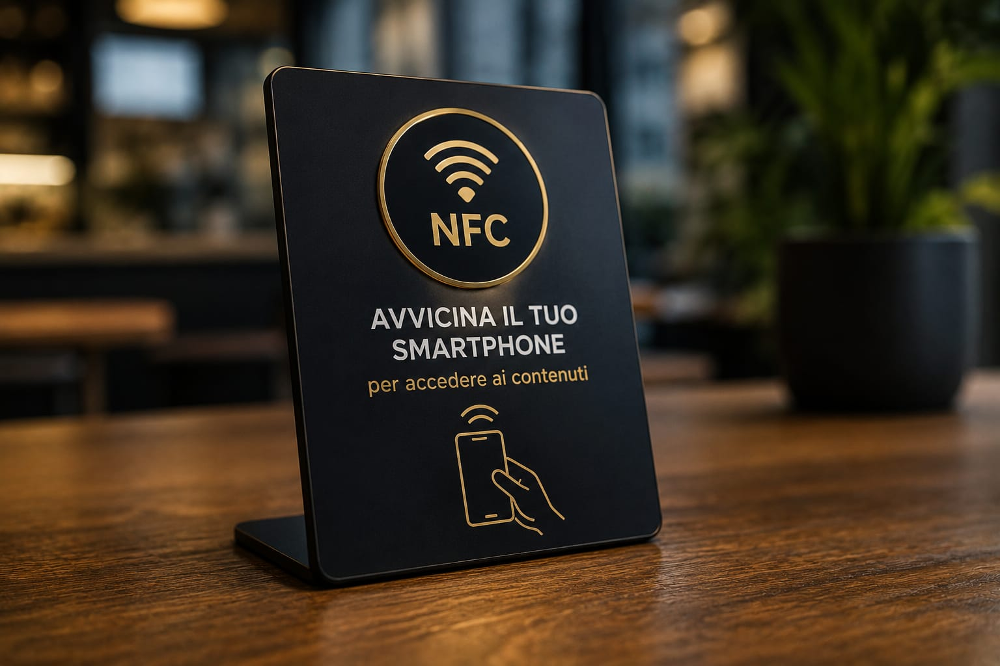
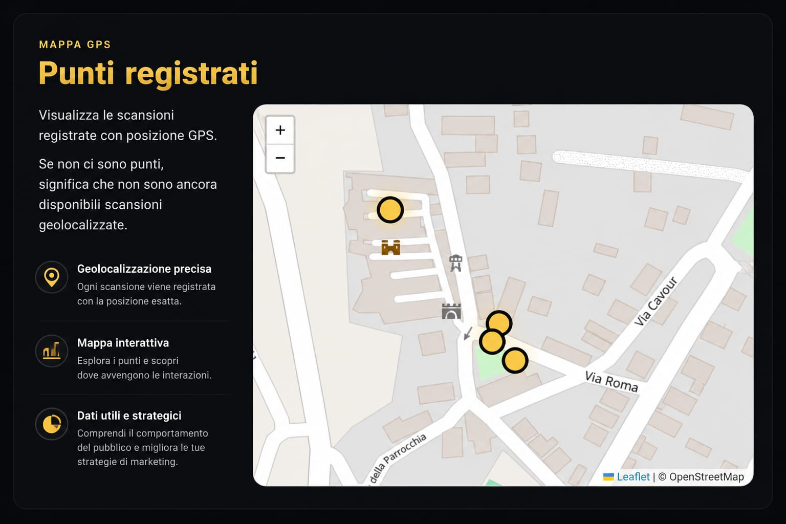
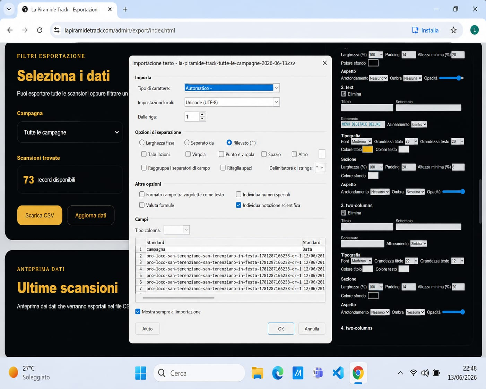

Punto fisico
Un oggetto, un prodotto, un materiale pubblicitario, un veicolo, un luogo o un espositore.
La Piramide Track collega volantini, menù, espositori, prodotti, veicoli, strutture e luoghi fisici a contenuti digitali attraverso QR Code, tecnologia NFC e pagine personalizzate.
Ogni scansione può diventare un’occasione per informare, coinvolgere, guidare l’utente verso un’azione e raccogliere dati utili attraverso gli strumenti di analisi configurati.
Track non è semplicemente un QR Code. È il sistema che trasforma una scansione in informazione, esperienza e dato misurabile.
Tecnologia utile, non tecnologia fine a sé stessa.

Il valore di Track nasce dalla capacità di collegare ciò che una persona vede nel mondo reale a un contenuto digitale progettato per quel preciso momento.
La Piramide Track è un sistema progettato per collegare un supporto fisico a una destinazione digitale.
Il punto di partenza può essere un volantino, un tavolo, un espositore, una vetrina, un prodotto, un’automobile, una camera d’hotel, un immobile, un cartello, un evento o qualsiasi superficie sulla quale sia possibile applicare un QR Code.
Nei contesti adatti può essere utilizzato anche un tag NFC, che permette all’utente di accedere al contenuto avvicinando uno smartphone compatibile.
L’utente compie un gesto semplice e viene indirizzato verso una landing page, una home page, un menù, una scheda, un video, una promozione, una mappa o un’esperienza progettata appositamente.
Il QR Code e il tag NFC sono soltanto la porta d’ingresso. Il vero valore si trova nel contenuto, nella struttura, nell’obiettivo e nell’analisi costruiti dietro quella porta.
Un oggetto, un prodotto, un materiale pubblicitario, un veicolo, un luogo o un espositore.
Un QR Code visibile oppure un tag NFC posizionato e segnalato correttamente.
Una pagina, un menù, un modulo, un video, una promozione o un contenuto informativo.
Visite ed eventi vengono analizzati attraverso gli strumenti configurati.
L’utente trova il QR Code o il simbolo NFC sul supporto scelto.
La fotocamera legge il QR oppure il dispositivo rileva il tag NFC.
L’utente raggiunge la pagina o l’esperienza progettata per quel punto di contatto.
Analytics registra gli accessi e gli eventi previsti dalla configurazione.
Prima di generare un QR Code definiamo cosa deve vedere l’utente, quale azione dovrebbe compiere e quale struttura digitale può guidarlo nel modo più semplice.
QR Code e NFC diventano utili soltanto quando sono inseriti all’interno di un percorso coerente.
Informare, mostrare un menù, presentare un prodotto, aprire una mappa, raccogliere una richiesta, raccontare un luogo o promuovere un’iniziativa.
La destinazione può essere una landing page, una home page, una pagina esistente, un documento o un’esperienza personalizzata.
Il QR Code viene creato e inserito nel supporto. Quando utile viene affiancato o sostituito da un tag NFC.
La pagina può registrare visite, clic e altre interazioni compatibili con la configurazione tecnica e con la privacy.
Il QR viene stampato o applicato sul punto scelto. Il tag NFC viene posizionato dove sia comprensibile e facilmente raggiungibile.
Gli accessi e le interazioni possono suggerire quali punti, contenuti e inviti all’azione funzionano meglio.
Track comprende strumenti differenti che lavorano insieme per costruire e gestire l’esperienza.
Il builder permette di costruire e organizzare i contenuti che l’utente vedrà dopo la scansione.

La pagina guida l’utente verso informazioni e azioni coerenti con lo scopo del progetto.

L’esperienza può essere visualizzata e verificata prima che il punto fisico venga pubblicato.

La dashboard raccoglie le informazioni utili per visualizzare e controllare il progetto.

I dati aiutano a osservare come e quando il pubblico utilizza l’esperienza.

I dati possono essere presentati in modo più chiaro per facilitare confronti e valutazioni.
Una pagina lenta, confusa o inadatta allo smartphone riduce il valore del QR Code. Per questo ogni destinazione deve essere costruita intorno all’utente e all’obiettivo.
Una persona che scansiona un QR Code cerca una risposta semplice, veloce e leggibile.
La landing page è particolarmente utile quando si desidera guidare l’utente verso una sola azione: leggere un’offerta, contattare l’attività, consultare un menù, vedere un immobile, prenotare, compilare un modulo o partecipare a un’iniziativa.
La home page è più adatta quando l’esperienza deve contenere più sezioni, servizi, prodotti o percorsi di navigazione.
Entrambe possono essere progettate per smartphone, collegate ad Analytics e aggiornate nel tempo quando la struttura tecnica del progetto lo consente.
Struttura ottimizzata per smartphone.
Informazioni organizzate per priorità.
Pulsanti e azioni immediatamente visibili.
Collegamento agli strumenti Analytics.
Entrambe le tecnologie possono aprire un contenuto digitale, ma non sono sempre adatte alle stesse situazioni.
Il QR Code viene inquadrato con la fotocamera. Può essere stampato in dimensioni differenti e inserito su moltissimi supporti.
Volantini e brochure.
Menù, tavoli ed espositori.
Vetrine e cartelli.
Automobili e furgoni.
Prodotti, confezioni e adesivi.
Eventi, musei e luoghi turistici.

Il tag NFC viene rilevato avvicinando uno smartphone compatibile. È utile soprattutto in luoghi stabili, protetti e chiaramente segnalati.
Espositori nei negozi.
Reception e camere d’hotel.
Concessionarie e veicoli esposti.
Showroom e punti informativi.
Tavoli e postazioni dedicate.

Punti fisici differenti possono essere collegati a contenuti diversi, consentendo di costruire percorsi, mappe, esperienze territoriali e analisi separate.
Quando la destinazione è collegata agli strumenti Analytics, gli accessi alla pagina possono produrre dati utili per comprendere il comportamento generale degli utenti.
La scansione apre una pagina web. È l’accesso a quella pagina a essere registrato dagli strumenti configurati.
Track può aiutare a comprendere quante visite riceve una determinata esperienza, in quali periodi avvengono, quali pagine vengono aperte e quali azioni digitali vengono eseguite.
QR Code differenti possono essere utilizzati per distinguere materiali, luoghi, supporti, prodotti o campagne differenti.
I dati disponibili dipendono dalla configurazione tecnica, dagli strumenti utilizzati, dal consenso e dalle regole sulla privacy applicabili.
Track non identifica automaticamente la persona che ha eseguito la scansione.
Non promettiamo informazioni che la tecnologia non può realmente fornire. I dati devono essere letti e interpretati correttamente.
La dashboard permette di raccogliere le informazioni e presentarle in modo più semplice e leggibile.
I dati non sostituiscono l’esperienza dell’imprenditore. La completano con informazioni che prima non erano disponibili.
QR diversi possono distinguere volantini, espositori, luoghi o materiali differenti.
Giorni e orari possono mostrare quando il pubblico interagisce maggiormente.
Clic e navigazione possono indicare quali informazioni attirano maggiormente.
Un percorso poco utilizzato può essere corretto e reso più semplice.
Un materiale stampato può produrre segnali digitali osservabili.
I risultati possono suggerire promozioni, contenuti e punti di accesso differenti.

Le scansioni e le interazioni possono essere raccolte in report utili per documentare l’andamento del progetto e confrontare periodi o punti differenti.
Un report è utile quando trasforma i dati in informazioni leggibili.
Il numero degli accessi, i periodi, i contenuti visitati e le azioni configurate possono essere presentati in modo ordinato per facilitare la valutazione.
Il report non garantisce automaticamente il successo di una campagna. Aiuta però a comprendere ciò che è accaduto e a prendere decisioni più consapevoli.
Track non appartiene a un solo settore. Si adatta all’obiettivo, al supporto e al pubblico.
Menù digitali, piatti del giorno, prenotazioni, eventi, promozioni e recensioni.
Informazioni per gli ospiti, servizi, mappe, regole e assistenza.
Schede prodotto, cataloghi, promozioni, offerte e contenuti aggiuntivi.
Schede dei veicoli, video, caratteristiche e richieste di prova.
Fotografie, planimetrie, informazioni e richieste di visita.
Storia dei luoghi, percorsi, audio, mappe e contenuti multilingua.
Programmi, orari, mappe, artisti e contenuti interattivi.
Landing page, offerte, moduli e analisi degli accessi digitali.
Istruzioni, autenticità, assistenza, video e approfondimenti.
Presentazione del servizio, contatti e accesso rapido al sito.
Corsi, orari, iscrizioni, tutorial e informazioni sui servizi.
Esperienze costruite intorno a necessità specifiche e nuove idee.
Il QR Code può essere applicato su qualsiasi supporto visibile, leggibile e raggiungibile.
Le dimensioni devono essere adeguate alla distanza, il contrasto deve essere sufficiente e il codice non deve essere deformato, coperto o danneggiato.
Deve inoltre essere accompagnato da un invito chiaro: l’utente deve capire perché dovrebbe scansionarlo e cosa troverà dopo.
Una presentazione completa pensata per comprendere utilizzo, possibilità, struttura e limiti del sistema.
Collegamento tra supporti fisici, contenuti digitali e strumenti di analisi.
Track trasforma un punto fisico in un accesso digitale. Non sostituisce il sito, la comunicazione o il rapporto con il cliente, ma rende più semplice il passaggio tra questi elementi.
Il sistema è composto da supporto fisico, tecnologia di accesso, destinazione digitale e strumenti di analisi.
Il QR Code richiama un indirizzo digitale. La fotocamera lo riconosce e propone all’utente di aprire il contenuto.
La qualità della scansione dipende da dimensioni, contrasto, distanza, luce e superficie.
Il tag NFC comunica a breve distanza con dispositivi compatibili. L’utente avvicina il telefono e riceve la proposta di aprire il contenuto.
Il tag deve essere scelto e posizionato valutando materiale, protezione e compatibilità.
La destinazione può essere una landing page, una home page, un menù, una mappa, un modulo, un documento o una scheda prodotto.
La scelta deve dipendere dall’obiettivo.
La scansione conduce a una pagina web. Gli strumenti installati sulla pagina possono registrarne l’accesso.
È quindi corretto parlare di analisi degli accessi e delle interazioni digitali, non di riconoscimento automatico della persona.
Possono essere configurati eventi come apertura della pagina, clic sui pulsanti, apertura di mappe, contatti e visualizzazione di contenuti.
Track collega una campagna fisica a un ambiente digitale osservabile. QR differenti possono distinguere supporti, zone o iniziative.
Quando la struttura tecnica è predisposta correttamente, la destinazione può essere aggiornata senza ristampare necessariamente il supporto fisico.
Track deve essere configurata rispettando informative, consensi e regole applicabili agli strumenti di analisi.
Track non obbliga le persone a scansionare, non garantisce vendite automatiche e non sostituisce la qualità del contenuto.
Un QR Code poco visibile o collegato a una pagina debole produrrà risultati limitati.
Track crea valore quando riduce una distanza: tra un prodotto e le sue informazioni, tra un luogo e la sua storia, tra una campagna fisica e i suoi dati, tra un cliente e l’azione desiderata.
Progettiamo ciò che deve accadere prima, durante e dopo l’interazione.
Scegliamo QR o NFC soltanto dopo aver compreso cosa deve ottenere il progetto.
Il contenuto viene organizzato per smartphone e per il contesto della scansione.
Non trasformiamo un accesso in una promessa. I numeri vengono interpretati nel loro contesto.
Ogni esperienza viene progettata in base al settore, al supporto e al pubblico.
Raccontaci il supporto che vuoi utilizzare, il pubblico che desideri raggiungere e l’azione che dovrebbe compiere.
Valuteremo QR Code, NFC, pagina digitale, contenuti e strumenti di analisi più adatti.
Indicaci dove desideri applicare Track, quale contenuto vuoi mostrare e quale obiettivo deve raggiungere.